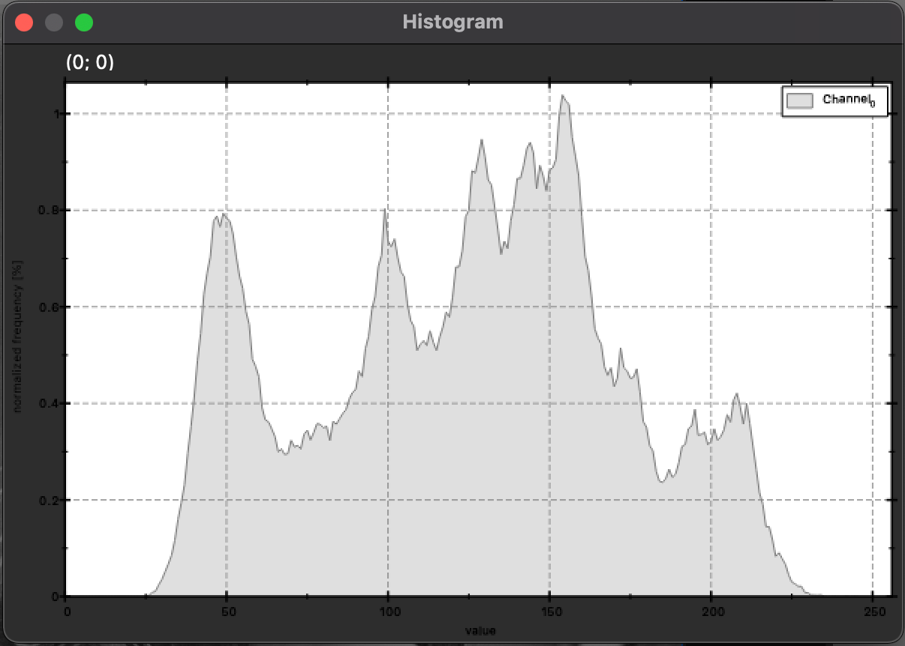
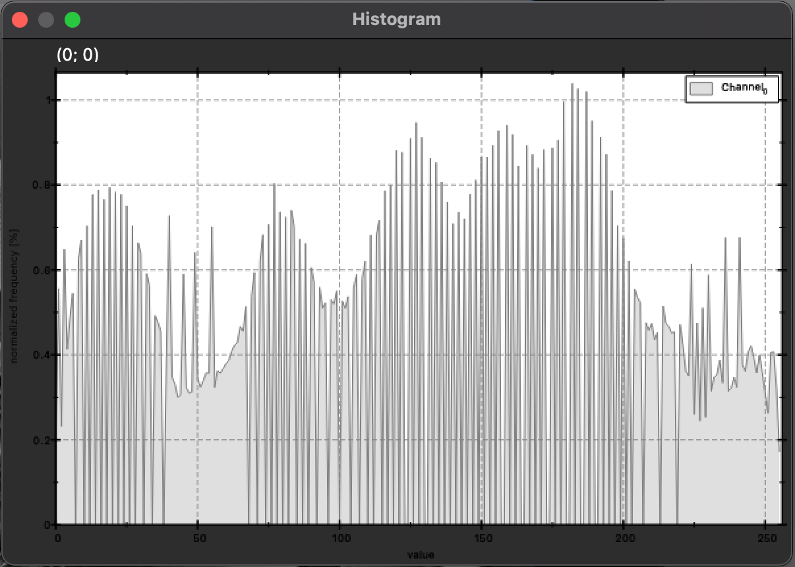

I'm an enthusiastic researcher in Image Processing and Computer Vision. Learning new theories and bringing them to practice is my hobby. My research topics are Pattern Matching, Stereo-Vision Reconstruction, and other Miscellaneous.
Histogram Equalization is a simple algorithm that can improve the contrast in an image.
By stretching out the range of histogram distribution, the contrast of image can be enhanced. However, the noise can be strengthened too.


For the histogram H(i), a cummulative distribution function (cdf) \(H^{'}(i)\) is defined as below.
\[H^{'}(i)=\sum_{0\le{j}<{i}}H(j)\]
After calculating the cdf function, \(H^{'}(i)\) must be normalized such that the maximum value is in the range of intensity gray value. Then, the image pixel is mapped into a new value.